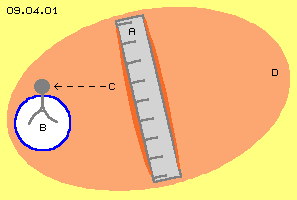
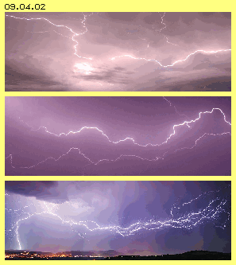
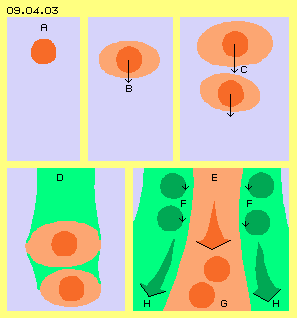
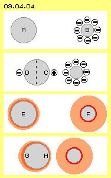
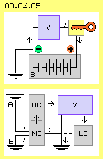

Herkunft der Ladung
Im vorigen Kapitel wurden zwei relevante Erscheinungsformen der Elektrizität diskutiert: einerseits das Elektron als eine in sich schwingende kugelförmige Bewegungseinheit, andererseits die elektrische Ladung als ein flächiges Bewegungsmuster. Hier nun stellt sich die generelle Frage, was als Quelle der Elektrizität in Frage kommt. Eine einfache Antwort wäre: die Sonne - weil von dort alle Energie der Erde letztlich stammt. Tatsächlich liefert die Sonne einen unendlichen Strom geladener Teilchen, welcher z.B. in der Ionosphäre ´elektrische Wolken und Strömungen´ bildet. Für einen direkten Zugriff mit üblicher Elektrotechnik sind diese Energien aber zu weit entfernt.
In einem früheren Kapitel 08.17. ´Äther-Wirbel der Erde´ habe ich (beim dortigen Bild 08.17.22) dargestellt, warum die ganze Erd-Oberfläche mit einer elektrischen Ladung bedeckt ist. Die Erd-Achse steht etwas schräg zur Ebene ihres Äther-Whirlpools. Der Äquator bewegt sich im Raum schneller als die Polregionen. Auf der Nachtseite weisen die Wirbel-Systeme der Sonne und der Erde gleichen Drehsinn auf, auf der Tagseite sind sie gegenläufig. Darum sind rund um die Erde ausgleichende Bewegungen im Äther notwendig. Es bilden sich lang-gestreckte Wirbelstränge, welche die ´Feldlinien´ des irdischen Magnetfeldes ergeben. Aus dem Äther-´Gekräusel´ können andererseits runde Bewegungs-Einheiten hervor gehen. Diese Elektronen haften an ´materiellen Partikeln´ oder driften frei in der Atmosphäre. Zur Erde hin ist ihre Dichte höher. Sie sinken auch weiter herunter und bilden auf der Erdoberfläche eine geschlossene Ladungsdecke.
Aufgeladen, negativ oder positiv

Elektrische Ladung lässt sich leicht erzeugen und nachweisen, wie in Bild 09.04.01 dargestellt ist. Wenn man z.B. ein PVC-Lineal (A, grau) mit einem Wolltuch reibt, wird an seiner Oberfläche eine negative Ladung (dunkelrot, am Rand markiert) erzeugt. Wenn man das Lineal nun in die Nähe eines Elektrometers bringt, wird Ladung angezeigt. Offensichtlich gelangt die Ladung bis zu den beiden Alu-Folien (B, grau) über die Entfernung C hinweg durch die Luft (oder auch durch ein ´Vakuum´). Da beide Plättchen gleichnamige Ladung tragen, drücken sie sich gegenseitig auseinander.
Dieser Vorgang ist vollkommen anders als die mechanischen Kraftwirkungen zwischen Festkörpern oder das Verhalten von Gasen und Flüssigkeiten (obwohl auch diese letztlich auf Äther-Bewegungen basieren). Hier aber wird eine reale Wirkung erzielt, die unmittelbar und ausschließlich durch den unsichtbaren Äther vonstatten gehen muss (sofern man nicht länger an der Fiktion festhalten will, dass reale Wirkung durch ein ´Nichts´ hindurch möglich sei). Oben wurde schon festgestellt, dass um alle Ansammlungen von Atomen eine gemeinsam schwingende Schicht von Äther gegeben ist. Zusätzlich zu dieser ´Aura´ befindet sich nun eine elektrische Ladung an der Oberfläche (und kann bei Leitern leicht darüber gleiten). Die ´Äther-Hülle´ der Ladung reicht offensichtlich sehr weit hinaus. Das involvierte Äther-Volumen (D, hellrot) der Aufladung ist also vielfach größer als das Lineal.
Auch wenn man ein Katzenfell streichelt, wird Ladung generiert. Allerdings werden dabei Elektronen von den Haar-Spitzen abgelöst und auf die Hand übertragen: die Katze ist dann ´positiv geladen´ und der Mensch entsprechend ´negativ´. Das Gehen auf einem Veloursteppich ergibt ein analoges Resultat. Bei jedem Tritt werden die Fäden umgeknickt und reiben sich seitlich zueinander. Die beteiligten Ätherpunkte lassen sich nicht längs verschieben. Es müssen ausgleichende Wirbel aufkommen, aus denen sich teilweise die kugelförmigen Bewegungsmustern von Elektronen ergeben. Diese werden vom Ende der Teppich-Fäden abgestoßen und die Ladung wird über den ganzen Körper weiter geschoben. Der involvierte Äther rund um den Menschen weist dann vermutlich über eine Lineal-Länge weit hinaus. Das ist normal nicht sichtbar, wohl aber wird es kurz vor Berührung einer Türklinke deutlich spürbar. Der Veloursteppich wird nicht positiv ´aufgeladen´, seine Struktur ermöglicht nur die Generierung von Elektronen. Der Mensch trägt tatsächlich vermehrt negative Ladung. Die Türklinke wird nicht positiv geladen sein. Wann immer sie aber weniger Ladung trägt als der Mensch, wird durch den überspringenden Funken ein Ladungsausgleich statt finden.
Blitz

Elektrische Ladung in großem Umfang wird bei Gewittern generiert. Jede Sekunde sollen Hunderte von Blitzen auf die Erde einschlagen. Deren Energien sollen unseren Bedarf weit überschreiten. Leider sind diese mit üblicher Elektrotechnik aber nicht nutzbar. In vorigem Teil 08. ´Etwas in Bewegung´ (und im Buch mit diesem Titel) habe ich in Kapitel 08.15. ´Normale und Paranormale Erscheinungen´ die Abläufe bei Gewittern ausführlich beschrieben. Darum werden nachfolgend nur die aus Sicht des Äthers relevanten Aspekte noch einmal angesprochen.
Man geht generell davon aus, dass in Gewitterwolken die Luft- und Wassermassen wie in einem Paternoster-Fahrstuhl mit bis zu 150 km/h nach oben schießen und wieder herunter fallen, auch mehrfach wiederholt. Letztlich bilden sich an den Unterseiten der Gewitterwolken große Ansammlungen freier Elektronen als Ergebnis einer ´Reibungs-Elektrizität´. In der Mechanik gibt es ´Reibungs-Wärme´, die sich einfach erklären lässt: es ist Energie erforderlich zur Überwindung der Reibung zwischen festen Körpern und in entsprechendem Umfang wird die molekulare Bewegung der Partikel beschleunigt, also ´Wärme´ erzeugt. Die Generierung von Elektrizität durch Reibung ist aber nur mit dem Verhalten eines realen Äthers zu verstehen.
Entscheidend dafür sind die ´Beinahe-Kollisionen´ zwischen den Partikeln in den Gewitterwolken. Wenn diese Wirbel-Komplexe seitlich aneinander vorbei ´schrammen´, weisen sie zumindest zeitweise gegenläufige Bewegungen auf. Im Äther zwischen den Partikeln kann dabei ´Stress´ aufkommen und die Situation kann nur durch zusätzliche Ausgleichs-Wirbel entspannt werden. Diese Bewegungs-Fetzen werden anschließend wieder aufgelöst durch den Freien Äther - oder eben durch den generellen Äther-Druck zum stabilen, kugelförmigen Bewegungsmuster eines Elektrons zurecht gedrückt. Die Elektronen können an ´materiellen Partikeln´ andocken und damit Ionen bilden. Wenn Eispartikel zusammen stoßen oder schmelzen, werden die Elektronen wieder abgestoßen. Letztlich schwebt eine große Anzahl freier Elektronen im Raum - und sie wissen nicht wohin. Sie werden weder von der Erde angezogen noch von den oberen, vermeintlich ´positiven´ Wolkenschichten. Wie die Bilder 09.04.02 zeigen, kann ein Blitz weite Stecken ´umher irren´, bevor er den einen Kilometer zur Erdoberfläche findet.
Hinterlassene Spur
Ein Elektron ist wesentlich kleiner als ein Atom, aber es beansprucht inklusiv seiner Aura einen gewissen Raum. Wie die Partikel eines Gases fliegen die Elektronen von einer Kollision zur nächsten. Je weniger der Weg durch andere Wirbelkomplexe versperrt ist, desto weitere Strecken können sie zurück legen. In dieser freien Bahn können andere Elektronen folgen, bis alle am nächsten Hindernis wieder aufgestaut werden. Nur jeweils um Zentimeter kommen die Elektronen eines Blitzes geradlinig voran. Ein Stau löst sich danach wieder auf in Richtung des geringsten Widerstandes.

In Bild 09.04.03 ist oben links bei A schematisch ein Elektron (rot) skizziert, ruhend im umgebenden Freien Äther (blau). Das Elektron bei B bewegt sich nach unten. Es ist also zusätzliche Bewegung im Äther gegeben, womit entsprechend größerer Raum für ausgleichende Bewegung notwendig ist. Nur das extrem einfache Wirbel-Muster des Photons (mit nur einer Umdrehung) kann sich im Äther mit Lichtgeschwindigkeit vorwärts ´schrauben´. Alle komplexeren Wirbel-Systeme aber weisen bei zusätzlicher Vorwärts-Bewegung ein zusätzlich involviertes Äther-Volumen auf, das hier stark überzeichnet als hell-rote Fläche markiert ist. Bei ´materiellen Partikeln´ äußert sich das durch zunehmende kinetische Energie bzw. Trägheit bzw. die ´Masse´ wird bei Lichtgeschwindigkeit unendlich groß.
Bei C ist das Elektron weiter voran gekommen und ein zweites kann folgen, z.B. auch mit höherer Geschwindigkeit. Bei D sind beide Elektronen weiter nach unten geflogen. Es fallen dabei aber keine ´Teilchen´ durch den Raum. Der Äther ist immer ´ortsfest und ruhend´. Auf der Bahn eines Elektrons nimmt der dortige Äther nur vorübergehend die Bewegungs-Struktur des Elektrons an. Wenn dieser Wirbel-Komplex hindurch gezogen ist, kommt auch dieser Bereich wieder zurück zur vorherigen, originären Bewegung Freien Äthers. Wenn nun aber wiederholt in kurzen Zeitabschnitten die gleichen oder ähnlichen Bewegungs-Strukturen durch einen Bereich hindurch fegen, kommt dieser Äther nicht mehr vollständig zurück in den Zustand Freien Äthers. Die rasche Folge von Elektronen hinterlässt praktisch eine Spur, welche bei D hell-grün markiert ist.
Blitz-Kanal
Diese Spur weist Reste des Bewegungs-Musters der Elektronen auf bzw. wird ähnlich sein zu deren Aura. Das ´Rosetten-Muster´ (aus Bild 09.03.06 bei F) wird diesen Bewegungen wohl am ehesten gerecht. Allerdings werden dabei die Schleifen nicht vollkommen symmetrisch sein, weil z.B. die generelle Vorwärtsbewegung immer eine ´schlagende´ Komponente aufweist. In diesem Bild 09.04.03 unten rechts ist diese Spur E hell-rot markiert, weil sie dem Bewegungsmuster der hindurch-eilenden Elektronen weitgehend entspricht. Durch den roten Pfeil ist die generelle Richtung des dortigen Schlagens angezeigt. Die Bewegungs-´Kerne´ G der Elektronen können in dieser Bahn widerstandsfrei voran kommen.
In diesem Kanal erfolgen damit gleichartige Bewegungen in rascher Folge. Die erhöhte Bewegungs-Intensität erfordert neue Ausgleichs-Bewegungen. Diese zusätzlich involvierten Äther-Volumina sind hier seitlich als hell-grüne Bereiche markiert. Sie müssen wiederum analoge Wirbel-Strukturen aufweisen. Umgekehrt können nun die Elektronen ´wie auf Kugellagern´ durch den Kanal fließen (bei F, dunkelgrün, schematisch angezeigt). Man weiß, dass die elektrische Energie der Blitze nicht nur aus Elektronen bestehen kann und nicht nur aus Ladung, die (wie üblich) an ´Materie´ gebunden ist. Diese Erscheinung wird ´Raum-Ladung´ genannt (ohne dafür eine Erklärung zu haben). Die realen Bewegungs-Strukturen des realen Äthers in diesen Bereichen sind die hier aufgezeigten Wirbel-Komplexe.
Auch in den röhren-förmigen Blitzkanälen muss natürlich diese schlagende Komponente gegeben sein, wie schematisch durch die Pfeile H angezeigt ist. Die Bewegung im Zentrum und auch im Bereich rundum zwingen allen Äther am Ende des Kanals zu analogem Schwingen. Wie ein Rüssel sucht dieser Schlauch jeweils nach dem Weg geringsten Widerstandes. Erst wenn ein Ast (mehr oder weniger zufällig) die Erdoberfläche erreicht hat, kann sich die gesamte ´Ladung´ auf eine große Fläche entspannen. Dann erst weitet sich dieser Kanal enorm aus und die gigantische Menge ´elektrischer Energie´ kann sich auf die Erde ergießen und anschließend verteilen.
Knie-tief
Die ganze Erde ist somit geladen (wie allgemein bekannt ist). Die Ladung befindet sich zum großen Teil an der Erdoberfläche. Auch die Atmosphäre ist geladen, wenngleich mit zunehmender Höhe in geringerem Umfang. In Bodennähe soll eine durchschnittliche elektrische Feldstärke von 100 V/m zwischen Erdoberfläche und Atmosphäre gegeben sein. Wenn das bisschen Reiben an obigem Lineal eine ´Aura´ von 30 cm ergab, so stehen wir zumindest ´knietief in einem starken elektrischen Feld´. Wir müssten also die überall vorhandene Energie nur ´aufsammeln´ - was allerdings nicht ganz einfach ist.
Die Elektronen aus obigem Veloursteppich wurden problemlos bis zu den Fingern hoch geschoben. Genauso wandert diese ´Erd-Ladung´ den ganzen Körper hinauf, auch auf Häuser und Berge. Alle Materie an der Erdoberfläche ist umgeben von dieser ´natürlichen Ladung´. Darum gibt es keine Potential-Differenz und wir spüren nichts von dieser allgemein vorhandenen Elektrizität. Allerdings gibt es damit in unserer Umgebung nichts ohne Ladung.
Nur negative Ladung, nur mehr oder weniger
Schon in der Schule lernen wir, dass es positive und negative Ladung gibt. Die Elektronen sind ´selbstverständlich´ negativ geladen - aber die Beispiele positiver Ladung sind spärlich: ein Positron soll das Gegenstück zum Elektron sein, bei ihrer Begegnung vernichten sie sich gegenseitig. Beim Urknall sollen ´zufällig´ mehr Elektronen entstanden sein, so dass letztlich nur ein Rest dieser negativen Ladungsträger übrig blieb. Wir lernen auch, dass alle Protonen eines Atomkerns positiv sind. Wir lernen auch, dass sich gleichnamige Ladungen abstoßen. Seltsamerweise nicht die Protonen, weil eine vermeintliche ´starke Kernkraft´ das verhindert. Warum und wie bleibt ein Geheimnis - wie üblich in Platons Höhle.

Natürlich kann man mit positiven und negativen Zahlen rechnen. Zahlen sind Ausdruck von Mengen - aber niemand hat jemals eine negative Menge gesehen. Umgekehrt gibt es hier keine positive Ladung - egal wie oft es uns eingebleut wurde.
Als Schul-Beispiel soll die in Bild 09.04.04 skizzierte ´Influenz´, Ladungs-Erhaltung und Ladungs-Trennung dienen.
Es gibt eine nicht geladene Metallkugel A und eine negativ geladene Metallkugel B. Wenn beide näher zueinander gerückt werden, ergibt sich auf der bislang ´neutralen´ Kugel eine positive Ladung C (warum und woher diese auch immer kommen könnte). Aufgrund der theoretisch erforderlichen Ladungs-Erhaltung bildet sich an der gegenüber liegenden Seite eine entsprechende negative Ladung D (woher diese auch immer kommen sollte). Man könnte nun diese Kugel mittig teilen (siehe gestrichelte Linie) und erhielte damit eine Halbkugel mit positiver und eine Halbkugel mit negativer Ladung. Das alles erfolgt gemäß bekannter physikalischer Gesetze. Dabei bleibt aber völlig offen, ob die zugrunde liegenden Modell-Vorstellungen der Realität entsprechen.
Nach obigen Überlegungen ist jegliche Materie umgeben von einer (negativen) Ladung. Darum weist auch die ´neutrale´ Kugel E eine Äther-Schicht von Ladung (dunkel-rot) auf, inklusiv einer Aura ausgleichenden Schwingens (hell-rot). Die Kugel F trägt nicht nur ein paar negative ´Elementar-Ladungen´, sondern eine relativ dicke Schicht von Ladung (dunkel-rot) und diese weist natürlich ein ´elektrisches Feld´ (hell-rot) auf. Dessen Schwingen reicht weit in den Raum hinaus. Wenn nun beide Kugeln näher zueinander gebracht werden, treffen sich gegenläufige Äther-Bewegungen. Das stärkere ´Feld´ drückt das schwächere Feld zusammen und schiebt es entlang der Kugeloberfläche zur anderen Seite. Die gleiche Ladungsmenge ist nun auf der Kugeloberfläche ungleich verteilt: bei G mit einer dickeren und bei H einer dünneren Ladungsschicht.
Alle Ladungen sind und bleiben aber gleicher Art. Alle Ladung ist immer negativ. Das Denken in Gegensätzen ermöglicht einfache ´Gesetze´, die aber zu falschen Vorstellungen führen. Real gibt es immer nur ein Mehr-oder-Weniger - und jeder Schüler würde das gut verstehen. Anstelle von ´positiv / negativ´ werden hier darum Begriffe wie ´hohe Ladung´ (HC, high charge), ´normale bzw. durchschnittliche Ladung´ (NC) und ´niedrige Ladung´ (LC, low charge) verwendet. Damit soll die ´Mächtigkeit´ einer Ladungsschicht zum Ausdruck kommen oder was man bislang als ´Ladungsdichte´ bezeichnet.
Schlüssel-Erlebnis
Wenn man ein Auto starten will, muss man zuerst den Schlüssel drehen. Irgendwann hatte ich dabei ein ´Schlüssel-Erlebnis´, das oben in Bild 09.04.05 schematisch dargestellt ist. Bekanntlich sind Elektronen die Träger des elektrischen Stroms. Beim Auto werden diese durch die Lichtmaschine in die Batterie (B, grau) bzw. den Akkumulator ´gedrückt´. Aus dieser Strom-Quelle werden die Verbraucher (V, blau) gespeist und die Elektronen wandern zurück zur Batterie. Die konventionelle Stromrichtung ist vereinbart als ein Fluss vom Plus- zum Minus-Pol. Real ist die Flussrichtung entgegen gesetzt. Hier wird ausschließlich von der realen Stromrichtung gesprochen, in diesem Sinne also von Minus nach Plus (siehe Pfeile). Korrekt ist allerdings nur das Fließen von hoher zu normaler oder niedriger Ladung (siehe unten).

Wertvoll ist also nach allgemeiner Auffassung, einen ´Überschuss´ an Elektronen zu erzeugen. Bei einem Kurzschluss fließen diese über den Null- bzw. Erd-Leiter augenblicklich ab, bis die Sicherung raus fliegt. Bei der Autobatterie kommen die Elektronen aus dem Minus-Pol - und dieser ist kurzgeschlossen mit dem Motorblock bzw. der Karosse, mittelbar also auch mit der Erde E. Offensichtlich gibt es also Elektronen im Überfluss, so dass sie überhaupt nicht ´wertvoll´ sind. Mit dem Auto-Schlüssel (rot, in gelbem Kasten) wird nicht der Minus- sondern der Plus-Pol gesichert. Das ist höchst seltsam, weil ein Wasserhahn und ein Gashahn natürlich vor dem Verbraucher installiert sind. Hier aber wird nicht der Zufluss, sondern der Abfluss elektrischen Stromes erlaubt / verhindert.
Das wertvolle Element in diesem Kreislauf ist also nicht der Minus-Pol als Quelle des Stromes, sondern der Plus-Pol und somit die Senke des Stromes. Allerdings sind die offensichtlich überall verfügbaren Elektronen bei dieser Konzeption nicht nutzbar. In der Batterie laufen chemische Prozesse ab und am Minus-Pol sind nur genau so viele Elektronen verfügbar wie am Plus-Pol zurück gegeben werden. Das frei verfügbare ´Meer von Elektronen´ könnte also nur genutzt werden mit einem Prozess, der nicht von chemischen Vorgängen abhängig ist.
Quelle und Senke
Das generelle Prinzip für die Nutzung der allgemein vorhandenen Ladung und damit der Gewinnung ´Freier Energie´ ist in diesem Bild unten schematisch skizziert. Normale Ladung (NC) könnte mittels Antenne A aus der Atmosphäre geholt werden, z.B. indem man Teslas ´Radiations´ oder Ionen bzw. freie Elektronen ´einsammelt´. Andererseits könnte man die normale Ladung der Erde E als Quelle nutzen. Viele Geräte werden ´geerdet´ und man muss sich bewusst sein, dass dieses nicht der Draht zu ´null Ladung´ ist. Das ist eine Selbstverständlichkeit - aber manche Geräte der Freien Energie funktionieren darum nicht, oder aber sie funktionieren einigermaßen, weil diese Tatsache nicht bewusst umgesetzt wird.
Man braucht eine neue Art von ´Transformator´ (grau), welche die normale Ladung (NC) in eine hohe Ladungs-Schicht (HC) bzw. -Dichte umsetzt. Damit ergibt sich ein Spannungsgefälle und die Potential-Differenz zwischen HC und NC kann durch die Verbraucher (V, blau) genutzt werden. Die Ladung kann dann zurück in den NC-HC-Trafo fließen oder über Erde abgeleitet werden (siehe Pfeile). Diese Funktion erfüllt an sich jeder Trafo oder Generator - aber der Strom muss zuvor durch motorischen Antrieb erzeugt werden. Hier ist natürlich die autonome Erzeugung hoher Ladung das Ziel - und einige bekannte Bau-Elemente können das fast schon (wie später zu diskutieren sein wird).
Eine nochmals höhere Potential-Differenz wäre gegeben mit einem Bauelement, das niedrige Ladung (LC, grau) erzeugt. Es dürfte relativ schwierig sein, Ladung unter das durchschnittlich Niveau der Umgebung abzusenken. Wenn es zeitweilig gelingen würde, könnte der Strom diese Senke bis zum normalen Stand auffüllen und dieser dann wieder als Input zu vorigem Trafo dienen (siehe gestrichelte Verbindung). Ideal wäre natürlich, wenn permanent eine ´nicht-aufzufüllende´ Senke machbar wäre. Dann wäre permanent eine Potential-Differenz zwischen hoher Ladung HC und niedriger Ladung LC gegeben. Möglicherweise wäre aber auch schon das Potential zwischen Normaler Ladung NC und einer tatsächlichen Null-Ladung nutzbar.
Das mag verworren klingen und unglaubwürdig erscheinen. Es gibt aber sehr wohl einige Bauelemente, welche dieser Funktion nahe kommen. Tesla sprach von dieser ´ultimativen Senke´ mehrfach. Allerdings durfte er diese nur mit ´allegorischen´ Beispielen beschreiben. Es ist Zielsetzung dieser Äther-Elektro-Technik, solche Bauelemente zu diskutieren - zur gegebenen Zeit. Vorweg aber dieser Hinweis: in 2005 habe ich ein Kapitel ´Äther-Energie-Generator´ in meiner Website veröffentlicht, in welchem z.B. auch die Nutzung der vorhandenen Strahlungen angesprochen wurde. Einige der dortigen Überlegungen und Bauelemente sind weniger gut, manche durchaus geeignet. Zwischenzeitlich habe ich zusätzliche Kenntnisse erworben. Brauchbare Elemente dieser frühen Arbeit werden hier in verbesserter Form wieder aufgenommen.
Vielschichtig
Bevor die Konzeption der neuartigen Bauelemente anzugehen ist, müssen vorweg noch einige Grundlagen diskutiert werden, z.B. über vielerlei Äther-Schichten. Basis dieser Äther-Physik ist die Feststellung, dass im Universum nur eine einzige Substanz real existent ist. Alle anderen Erscheinungen sind nur Bewegungen von Äther im Äther. Die Atome der ´normalen Materie´ sind komplexe Bewegungsmuster in kugelförmigen Einheiten. Innen ist immer ein geordnetes Schwingen auf relativ weiten Bahnen gegeben. Als Übergang zum relativ chaotischen ´Zittern´ auf engen Bahnabschnitten des Freien Äthers ist rund um jedes Atom ein weiter Bereich ausgleichender Bewegungen notwendig.
Auch um die Moleküle ist eine gemeinsame Schicht analog schwingenden Äthers vorhanden, so dass z.B. H2O eine gemeinsame ´Aura´ umgibt. Auch Ansammlungen von Partikeln sind wiederum eingebettet in eine gemeinsame Äther-Schicht, welche z.B. einen Wasser-Tropfen zusammen hält. Auch die Ansammlungen von Atomen bei Festkörpern bilden eine gemeinsame Oberfläche. Das Schwingen des Äthers um einen Leiter könnte man sich z.B. so vorstellen, wie ein Kornfeld auf hügeligem Gelände vom Wind bewegt wird (in sehr grobem Vergleich). Von allen Lebewesen ist bekannt, dass sie eine ´Aura´ aufweisen, wie z.B. von den Kirlian-Fotos bekannt ist. Nicht zuletzt ist für jeden Menschen eine ´heile´ Aura lebensnotwendig.
Mit den Überlegungen dieser Äther-Elektro-Technik kommt nun um alle Körper nochmals eine zusätzliche Schicht schwingenden Äthers hinzu, die als ´elektrisches Feld´ längst bekannt ist. Allerdings wurde sie bislang praktisch nur als fiktives Modell behandelt und nicht als reales Schwingen eines realen Äthers gesehen (man ist im Gegenteil stolz darauf, dass deren Wirken ´keines substanziellen Mediums bedarf´). Hier aber soll das Bewegungsmuster des elektrischen Feldes so exakt als möglich beschrieben werden. Damit sollte die Erscheinung der Elektrizität deutlich abgrenzbar sein gegen die oben genannten, vielfältigen Schwingungs-Schichten des Äthers. Das ist die Zielsetzung der folgenden Kapitel.